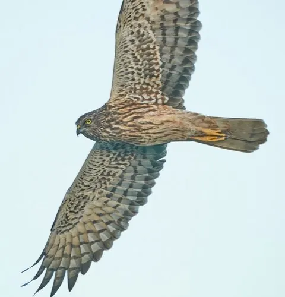

鸟类 · 动物界
白腹鹞 Circus spilonotus

中型湿地猛禽，雄鸟头胸黑褐、腹面银白，雌鸟通体褐色并具纵纹。常贴着芦苇丛低空滑翔，是东亚沼泽湿地的代表性猛禽。
- 分类
- 门脊索动物门纲鸟纲目鹰形目科鹰科属鹞属
- 栖息环境
- 芦苇沼泽、湿草甸、河湖滩涂、水库消落带与水稻田，偏好有大片挺水植物的开阔湿地。
- 地理分布
- 繁殖于西伯利亚东南部、蒙古东部、中国东北及华北；越冬于中国华南、台湾及东南亚。
- 保护级别
- IUCN 红色名录列为无危（LC）；中国国家二级保护野生动物，受野生动物保护法保护。
物种志
白腹鹞体长约四十三至五十四厘米，翼展一百一十至一百三十厘米，雌鸟体型明显大于雄鸟。雄鸟繁殖羽头部与胸部黑褐色，肩背灰白并杂有黑斑，腹面洁白，翼下覆羽近白；雌鸟通体褐色，头颈与胸腹密布深色纵纹，尾羽具横斑。虹膜黄色，嘴黑色，脚黄色，跗跖细长。
它栖息于芦苇沼泽、湿草甸、河湖滩涂与稻田，常在低空缓慢滑翔，双翼上举成浅“V”形，伺机扑击鼠类、蛙类与小型鸟类。繁殖期在芦苇丛或湿草地地面营巢，每窝产卵四至五枚，主要由雌鸟孵化。东亚种群繁殖于西伯利亚东南部、蒙古东部与中国东北，冬季南迁至华南及东南亚越冬，迁徙时常单独或成对沿海岸湿地行进。
形态与习性
- 体长43–54 厘米，雌鸟大于雄鸟
- 翼展110–130 厘米
- 体重350–700 克
- 食性鼠类、蛙类、小型鸟类与大型昆虫
- 繁殖芦苇沼泽地面营巢，每窝 4–5 枚
- 保护级别国家二级；IUCN 无危
趣味知识
- 雄鸟黑白灰相间，雌鸟以褐色纵纹为主，两性羽色差异显著。
- 巡猎时双翼上举成浅 V 形，贴着芦苇梢缓慢滑翔。
- 冬季常与其他鹞类混群在开阔湿地越冬。